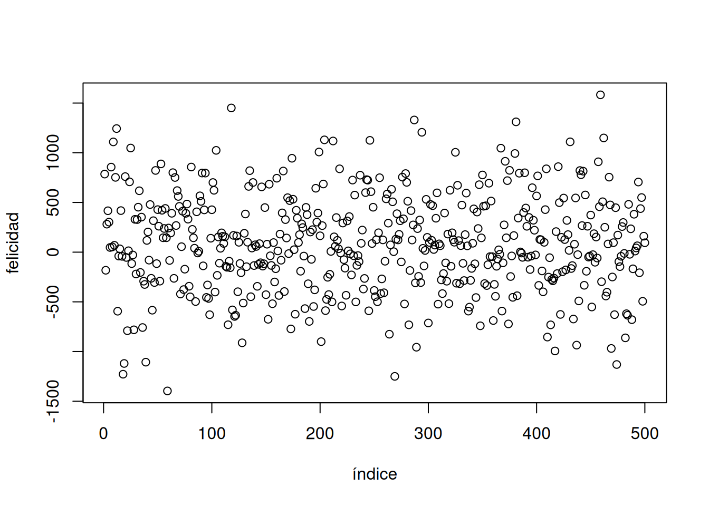
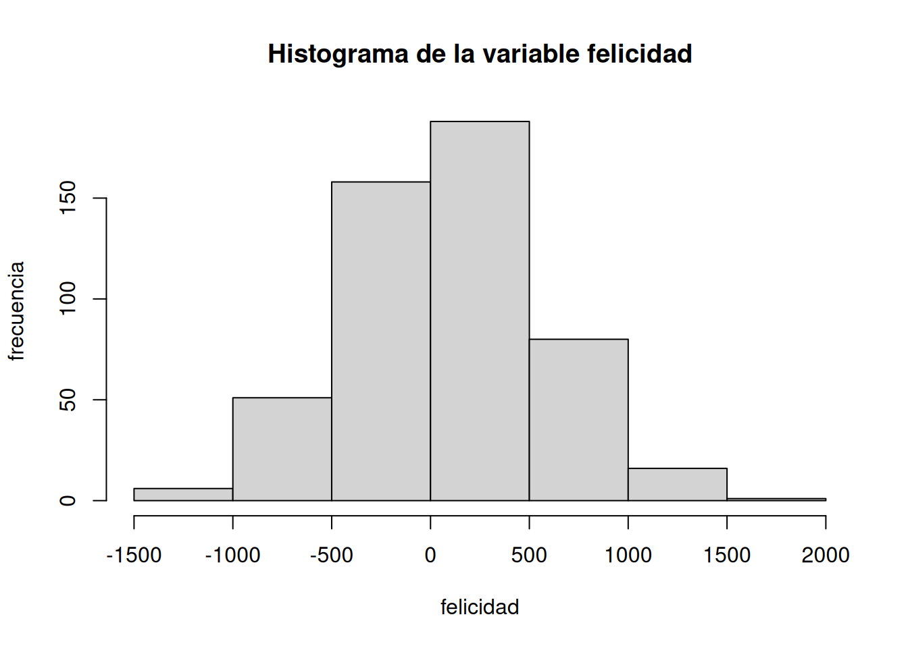
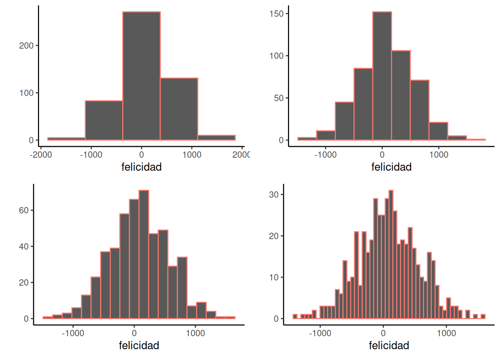
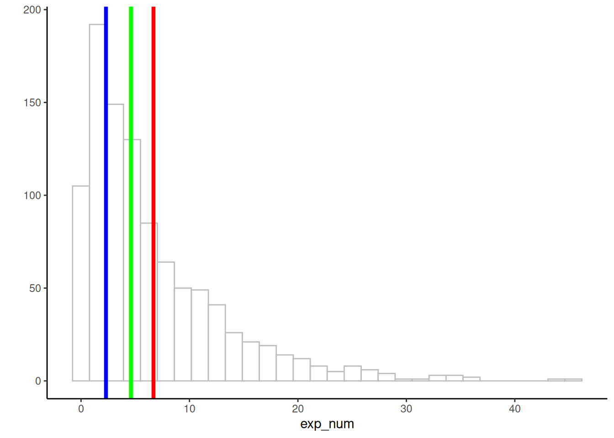
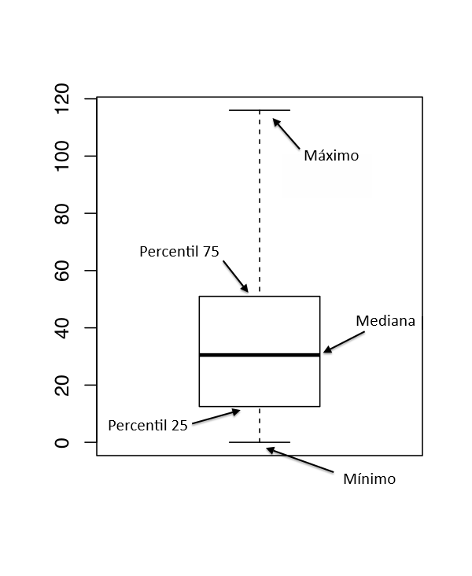
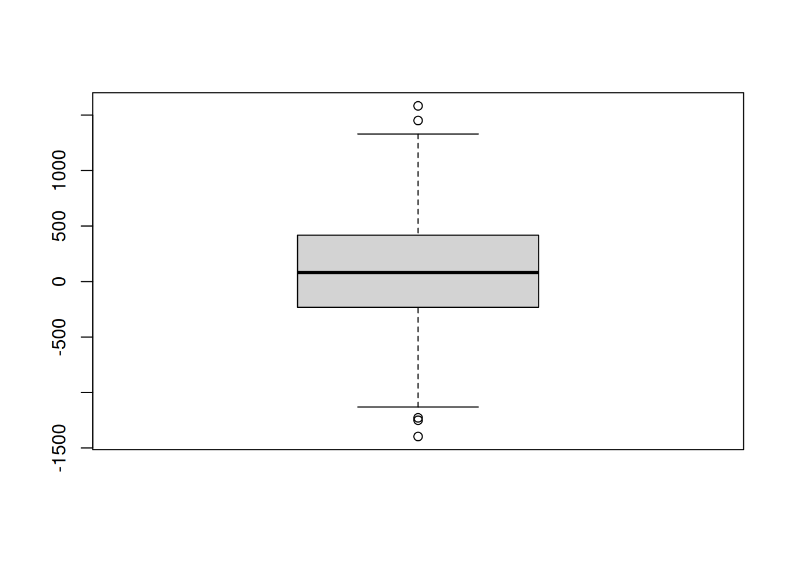

| 304 | -11 | 387 | -286 | 756 | 166 | 174 | 122 | -105 | -498 |
| 1050 | 19 | 240 | -62 | 206 | -808 | 57 | 192 | 340 | 1285 |
| 90 | 1187 | -1279 | -716 | 1023 | 592 | 106 | -686 | 1236 | 692 |
| -127 | -151 | -549 | 480 | -105 | -110 | 757 | 179 | -337 | 368 |
| 213 | 203 | -621 | 302 | 530 | -914 | -427 | -517 | -238 | 650 |
| -782 | -316 | 521 | -94 | 259 | 266 | 324 | -240 | 209 | 704 |
| -624 | -449 | -683 | -245 | 444 | -272 | -661 | -424 | -11 | -62 |
| 203 | 349 | 218 | -24 | 192 | 437 | 725 | 271 | 312 | 37 |
| 190 | 273 | -711 | 89 | 146 | 899 | -340 | 111 | 1225 | 410 |
| 702 | 247 | 869 | 45 | -468 | 382 | -541 | 39 | -265 | -27 |
| 164 | -255 | 660 | -251 | 477 | -208 | -404 | -279 | 65 | 938 |
| 401 | 116 | 335 | 524 | 396 | 265 | 305 | 631 | -190 | -408 |
| 251 | 55 | -64 | 150 | 172 | 685 | 44 | 837 | 11 | 751 |
| -804 | 28 | 98 | -64 | -645 | -989 | 348 | 552 | -256 | 484 |
| 349 | 223 | 1032 | 375 | 31 | -352 | 460 | 426 | -123 | -598 |
| 603 | 26 | 243 | 742 | -238 | -338 | -231 | -228 | 210 | 186 |
| -957 | 824 | 195 | -99 | -36 | 68 | 297 | -35 | -819 | 943 |
| 233 | -459 | 411 | 515 | -275 | 741 | 519 | -215 | -361 | 54 |
| -1032 | -488 | 351 | 578 | -224 | 261 | -445 | 198 | -609 | 687 |
| 598 | -468 | -23 | 1447 | -486 | 316 | -494 | 154 | -274 | 282 |
| 198 | -601 | -459 | -1152 | -96 | -244 | 482 | -872 | 93 | -1019 |
| 245 | -34 | 328 | 27 | -186 | -176 | -36 | 59 | 116 | -286 |
| -365 | -825 | 281 | -1082 | -376 | 625 | 360 | 58 | -58 | -290 |
| 233 | -280 | 74 | 66 | 45 | -27 | -217 | -57 | -43 | 320 |
| 313 | 477 | 165 | 325 | 430 | -187 | 137 | 240 | 296 | -499 |
| 132 | -785 | 567 | -312 | -437 | 152 | -424 | -41 | 101 | 686 |
| 131 | 617 | 446 | 108 | 370 | 316 | 614 | -28 | 213 | 686 |
| 341 | 556 | -198 | 88 | 54 | -103 | 144 | 365 | 512 | 244 |
| 228 | -241 | 95 | 740 | 806 | -499 | -117 | 593 | 835 | 598 |
| 129 | -804 | 163 | -401 | -56 | -770 | 672 | -242 | -351 | 102 |
| 919 | -96 | -369 | 294 | -388 | -665 | -341 | -252 | -543 | 200 |
| -71 | 325 | -4 | -491 | -485 | -67 | -440 | -379 | 512 | -361 |
| 470 | 577 | 80 | 137 | 21 | 489 | 1127 | 1164 | 313 | 243 |
| 324 | -1134 | -106 | -154 | 231 | -527 | -1139 | -681 | -74 | 833 |
| 372 | -414 | 482 | 444 | -371 | 119 | 930 | 275 | 328 | 424 |
| 109 | 273 | 516 | 401 | 473 | -651 | -202 | -96 | 935 | 486 |
| -69 | 69 | 257 | -572 | 189 | 295 | -769 | 895 | 714 | -154 |
| 115 | -548 | 424 | -448 | -17 | 608 | -190 | 146 | -27 | -627 |
| 133 | -117 | 523 | 228 | -23 | 656 | 1006 | 786 | 351 | 178 |
| 117 | 1356 | -767 | 936 | 409 | -208 | -523 | 958 | -261 | -1268 |
| 155 | 198 | -225 | 569 | -1408 | 549 | -302 | 578 | 454 | 127 |
| 181 | 115 | 266 | -95 | 831 | -112 | -492 | -19 | 235 | 340 |
| -527 | 863 | -477 | 27 | -340 | 262 | 325 | 69 | -289 | 192 |
| -199 | 120 | 1147 | -825 | 904 | 667 | 398 | -327 | -946 | 87 |
| -711 | -138 | -793 | 676 | 864 | 536 | 124 | -52 | 3 | 444 |
| 659 | 380 | 137 | -16 | -675 | 700 | 189 | -417 | -344 | 579 |
| 846 | 62 | 454 | 534 | -293 | 77 | -519 | 376 | -541 | 88 |
| -105 | 644 | 77 | 217 | 5 | -59 | 727 | -376 | 405 | -280 |
| -337 | 513 | 466 | 219 | 934 | -486 | -651 | -289 | -141 | 899 |
| -618 | 971 | 267 | 299 | -141 | 160 | 1049 | -310 | -770 | 23 |
2 Describir los datos
Notas
Traducido al español rioplatense por ChatGPT4-o bajo la supervisión de Álvaro Cabana.
Mucho mejor una respuesta aproximada a la pregunta correcta —aunque sea vaga— que una respuesta exacta a la pregunta incorrecta, que siempre puede ser precisa. — John W. Tukey
Este capítulo trata sobre estadísticas descriptivas. Son herramientas para describir datos. Algunas cosas a tener en cuenta mientras avanzamos:
- Hay muchas formas diferentes de describir datos.
- No hay una única forma “correcta”; podés elegir la más “útil” para los datos que estás describiendo.
- Es posible inventar nuevas formas de describir datos. Todas las formas que vamos a ver fueron inventadas por otras personas, y se usan comúnmente porque resultan útiles.
- Describir los datos es necesario porque normalmente hay demasiados, y por sí solos no tienen mucho sentido.
2.1 Así se ve un exceso de números
Supongamos que querés saber cuán feliz se siente la gente. Entonces salís a la calle y le preguntás a miles de personas cuán felices están. Les permitís elegir cualquier número, desde menos infinito hasta más infinito. Registrás todos esos números. ¿Y ahora?
Bueno, podrías mirar esos números y ver si eso te ayuda a entender algo sobre la felicidad de las personas. ¿Cómo podrían verse esos números? Quizás algo así:
¿Y qué vas a hacer con esa montaña de números? ¿Mirarlos todo el día? Cuando trabajás con datos, te vas a encontrar con tantos números que te van a abrumar. Por eso necesitamos formas de describirlos de una manera más manejable.
La descripción completa de los datos siempre son los datos mismos. Pero las estadísticas descriptivas y otras herramientas de resumen nos permiten ir un paso más allá: comprimir y simplificar la información para entenderla mejor. Resumir los datos es como comprimir las partes importantes de algo en una versión útil y manejable. Es como contarle a una amiga por qué debería ver una película: no le contás toda la película, sino que le marcás los momentos clave. Resumir los datos es como el adelanto de una película, pero aplicado a los datos.
2.2 Mirar los datos
Ya intentamos una forma de mirar los números, y no fue muy útil. Probemos ahora con otras maneras de ver los datos, usando gráficos.
2.2.1 ¡Pará! Es hora de graficar!
Convirtamos todos los números en puntos, y mostremos esos puntos en un gráfico. Ojo: cuando hacemos esto, todavía no hemos resumido nada de los datos. Simplemente los estamos observando en formato visual, en vez de mirar los números directamente.

La Figura 2.1 muestra 500 mediciones de felicidad. El gráfico tiene dos ejes. El eje horizontal x, que va de izquierda a derecha, está etiquetado como “Índice”. El eje vertical y, que va de abajo hacia arriba, está etiquetado como “felicidad”. Cada punto representa una medición de felicidad de cada persona en nuestro estudio ficticio.
Antes de hablar sobre lo que podemos y no podemos ver en los datos, vale la pena mencionar que la forma en que los graficás puede hacer que algunas cosas sean más fáciles de ver y otras más difíciles. Entonces, ¿qué podemos ver ahora en los datos?
Hay muchos puntos por todos lados. Parece que hay 500, porque el índice llega hasta 500. Algunos puntos parecen llegar tan alto como 1000–1500, y tan bajo como -1500. Da la impresión de que hay más puntos en la zona central del gráfico, más o menos alrededor del 0.
Conclusión: podemos ver todos los números a la vez al ponerlos en un gráfico, y eso es mucho más fácil y útil que mirar los números crudos.
Bien, si estos puntos representan cuán felices están 500 personas, ¿qué podemos decir sobre esa gente? Primero, los puntos están bastante dispersos, así que distintas personas tienen niveles de felicidad diferentes.¿Hay más personas felices que infelices, o al revés? Eso no se ve claramente en el gráfico, así que hagamos otro tipo de gráfico, llamado histograma.
2.2.2 Histogramas
Hacer un histograma será nuestro primer acto de resumir oficialmente algo sobre los datos. Ya no vamos a mirar cada punto individualmente, sino que vamos a ver cómo se agrupan los números. Mirá la Figura 2.2, un histograma de los datos de felicidad, y después lo explicamos.

Los puntos desaparecieron, y ahora vemos unas barras. Cada barra resume varios puntos: representa cuántos puntos (frecuencia) caen dentro de un determinado rango de felicidad, también llamado bin o intervalo. Por ejemplo, ¿cuántas personas dieron una puntuación de felicidad entre 0 y 500? La cuarta barra —la que va de 0 a 500 en el eje x— te lo dice. Mirá qué alta es esa barra. ¿Cuánto mide? La altura se muestra en el eje y, que indica la frecuencia (el número de puntos o valores). Parece que unas 150 personas dijeron que su felicidad estaba entre 0 y 500.
En general, vemos que hay muchos bins en el eje x. Dividimos los datos en intervalos de 500. El bin #1 va de -2000 a -1500, el bin #2 de -1500 a -1000, y así sucesivamente hasta el último intervalo. Para hacer el histograma, simplemente contamos cuántos valores caen en cada intervalo, y graficamos esas frecuencias como función de los bins. Voilà, un histograma.
¿Qué nos ayuda a ver el histograma sobre los datos? Primero, podemos ver la forma de los datos. La forma del histograma se refiere a cómo sube y baja. Nos dice dónde están concentrados los datos. Por ejemplo, cuando las barras son bajas, sabemos que no hay muchos datos ahí. Cuando son altas, sabemos que hay más. Entonces, ¿dónde están la mayoría de los datos? Parece que están sobre todo en los dos bins del medio, entre -500 y 500. También podemos ver el rango de los datos, o sea los mínimos y máximos. La mayoría de los datos están entre -1500 y +1500, así que no hay felicidad ni tristeza infinitas en este conjunto de datos.
Cuando hacés un histograma, podés elegir qué tan ancho será cada intervalo. Por ejemplo, abajo hay cuatro histogramas diferentes del mismo conjunto de datos de felicidad. Lo que cambia es el ancho de los intervalos.

Todos los histogramas tienen aproximadamente la misma forma general: de izquierda a derecha, las barras arrancan bajas, suben, y después bajan otra vez. En otras palabras, a medida que los números se acercan al cero, tienden a aparecer con más frecuencia. Este patrón general se ve en todos los histogramas. Pero algunos detalles del patrón se pierden cuando las barras son demasiado angostas. Por ejemplo, aunque en general las barras se hacen más altas al ir de -1000 a 0, hay algunas excepciones y las alturas fluctúan un poco. Cuando las barras son más anchas, hay menos excepciones al patrón general. ¿Qué tan ancho o angosto debe ser tu histograma? Es como la historia de Ricitos de Oro: tiene que ser justo el indicado para tus datos.
2.3 Ideas importantes: distribución, tendencia central y varianza
Vamos a presentar tres términos importantes que vamos a usar mucho: distribución, tendencia central y varianza. Estos términos son parecidos a su uso cotidiano (aunque sospecho que la mayoría no dice “tendencia central” muy seguido).
Distribución. Cuando pedís algo por internet, ¿de dónde viene y cómo llega a tu casa? Eso viene de uno de los centros de distribución de Amazon. Ellos distribuyen todo tipo de cosas repartiéndolas por todos lados. “Distribuir” significa eso: esparcir algo. Notá que los datos en el histograma están distribuidos, o sea, están repartidos en distintos intervalos. También podemos hablar de una distribución como sustantivo. El histograma es una distribución de las frecuencias a lo largo de los bins. Las distribuciones son muy, muy, muy, muy, muy importantes. Pueden tener muchas formas distintas. Pueden describir datos, como en el histograma que vimos. Y, como vamos a ver más adelante, también pueden generar datos. Muchas veces nos vamos a preguntar de dónde vienen nuestros datos, y eso suele significar preguntarse qué tipo de distribución podría haber generado esos datos (más sobre eso más adelante).
Tendencia central tiene que ver con lo común: ¿Qué tienen en común ciertos números? Por ejemplo, ¿hay algo en común en los números del histograma? Sí, podemos decir que la mayoría están cerca del 0. Hay una tendencia de muchos de esos números a estar centrados cerca del 0. Fijate que estamos siendo cautelosos: no estamos diciendo que todos sean 0, sino que hay una tendencia a estar cerca de 0. Hay muchas formas de hablar de la tendencia central de un conjunto de números. Incluso puede haber más de una. Por ejemplo, si muchos de los números estuvieran alrededor de -1000, y otro grupo similar estuviera alrededor de 1000, podríamos decir que hay dos tendencias.
Varianza tiene que ver con las diferencias: ¿Qué tan distintos son los números? Por ejemplo, ¿hay algo diferente entre los números del histograma? ¡SÍ! ¡No son todos iguales! Si los números no son todos iguales, es porque varían. Entonces, la varianza se refiere a cuánto difieren entre sí los números. Hay muchas formas de resumir la cantidad de varianza en un conjunto, y ya vamos a ver eso dentro de poco.
2.4 Medidas de tendencia central (lo común)
Ya vimos que podemos hacernos una idea de los datos graficando puntos o haciendo un histograma. Estas herramientas nos muestran cómo se ven los números, cuán grandes o pequeños son, y qué tan parecidos o diferentes son entre sí. Está bueno tener esa intuición. Pero esas percepciones visuales no son muy precisas. Además de resumir los datos con gráficos, podemos resumirlos con números (¡NO, por favor, más números no! Bueno, prometemos que pueden ser tus amigos).
2.4.1 De muchos números a uno solo
Las medidas de tendencia central tienen un objetivo importante: reducir un montón de números a un solo número que podamos mirar. Ya sabemos que mirar miles de números no sirve de mucho. ¿No estaría bueno poder mirar uno solo? Nosotros creemos que sí. Resulta que hay muchas formas de hacerlo. Así, si alguien alguna vez te hace la temida pregunta: “che, ¿cómo son todos estos números?”, podés responder: “son más o menos como este número que ves acá”.
Pero, al igual que en Indiana Jones y la Última Cruzada (gran película, recomendada), tenés que elegir sabiamente tu medida de tendencia central.
2.4.2 Moda
La moda es el número que aparece con más frecuencia en tu conjunto de datos. Eso es todo. ¿Cómo se calcula? Tenés que contar cuántas veces aparece cada número, y el que más veces aparece, esa es la moda.
Ejemplo: 1 1 1 2 3 4 5 6
La moda de este conjunto es 1, que aparece tres veces. Los demás números aparecen solo una vez.
Bueno, perfecto. ¿Y qué pasa acá?
Ejemplo: 1 1 1 2 2 2 3 4 5 6
Ahora tanto 1 como 2 aparecen tres veces. ¿Qué hacemos? Decimos que hay dos modas: 1 y 2.
¿Por qué la moda es una medida de tendencia central? Bueno, cuando preguntamos “¿cómo son mis números?”, podemos decir: “la mayoría son como un 1” (o lo que sea que sea la moda).
¿Es una buena medida de tendencia central? Depende de los números. Por ejemplo, considerá estos:
1 1 2 3 4 5 6 7 8
Acá, la moda vuelve a ser 1, porque aparece dos veces y los demás números una sola vez. Pero, ¿la mayoría de los números son “como un 1”? No, la mayoría no lo son.
“¡Argh! Entonces, ¿debería o no debería usar la moda? Pensé que esta clase me iba a decir qué hacer…”. No, nadie te va a decir qué hacer. Cada vez que uses una herramienta estadística vas a tener que pensar qué estás haciendo y justificar por qué tiene sentido. Lo siento.
2.4.3 Mediana
La mediana es el punto exacto del medio en el conjunto de datos. Después de todo, estamos preguntándonos sobre la tendencia central, así que, ¿por qué no ir al centro del conjunto de datos a ver qué hay ahí? ¿Qué significa “el medio”? Miremos estos números:
1 5 4 3 6 7 9
Mmm, ok. ¿Entonces el 3 está en el medio? Parece un poco arbitrario. Y sí. Antes de calcular la mediana, hay que ordenar los números de menor a mayor:
1 3 4 5 6 7 9
Ahora el 5 está en el medio. Y por “medio” nos referimos literalmente al medio. Hay tres números a la izquierda del 5, y tres a la derecha. Así que sí, el 5 está justo en el centro.
Bueno, pero ¿qué pasa si hay una cantidad par de números? Entonces el medio no va a estar en el conjunto, ¿no? Veamos:
1 2 3 4 5 6
Acá no hay ningún número entre el 3 y el 4; el centro está vacío. En este caso, calculamos la mediana sacando el número que está exactamente entre 3 y 4. Así que la mediana es 3.5.
¿Es la mediana una buena medida de tendencia central? Sí, muchas veces es muy útil. Una propiedad interesante de la mediana es que se mantiene en el medio incluso cuando algunos números se desvían mucho. Por ejemplo:
1 2 3 4 4 4 5 6 6 6 7 7 1000
La mayoría de estos números son más o menos pequeños, pero 1000 es un número grande y raro, muy distinto del resto. La mediana sigue siendo 5, porque está en el medio de los números ordenados. Y además, el 5 es bastante parecido a la mayoría de los valores (salvo 1000). Así que la mediana representa bastante bien al conjunto, incluso cuando hay uno o dos valores muy distintos.
Por último, el término valor atípico (o outlier) lo usamos para describir esos números que son muy diferentes al resto. En este ejemplo, 1000 es un outlier, porque está muy alejado en la línea numérica comparado con los otros. Qué hacer con los outliers es otro tema del que hablaremos varias veces en este curso.
2.4.4 Media
¿Notaste que este libro de estadística todavía no usó una fórmula? Bueno, eso está por cambiar. Pero si te dan ansiedad las fórmulas, tranqui: vamos a explicarlas bien.
La media también se llama promedio. Y probablemente ya sepas qué es: se suman todos los números y se divide por la cantidad total, ¿no? ¿Cómo se escribe eso como fórmula? Así:
\(\text{Media} = \bar{X} = \frac{\sum_{i=1}^{n} x_{i}}{N}\)
“Eso me suena a griego”. Y sí. El símbolo \(\sum\) se llama sigma y representa la operación de sumar. La “i” abajo y la “n” arriba indican que hay que sumar todos los números del conjunto, desde el primero (i) hasta el último (n). Las letras son etiquetas arbitrarias, llamadas variables, que usamos para describir. El \(x_i\) se refiere a cada número del conjunto. Sumamos todo, y dividimos por \(N\), que es la cantidad total de valores. A veces usamos \(\bar{X}\) para referirnos a la media.
En lenguaje común, la fórmula sería algo así:
\(\text{Media} = \frac{\text{Suma de mis números}}{\text{Cantidad de números}}\)
“¿Y por qué no dijiste eso desde el principio?”. Bueno… lo acabamos de decir.
Calculemos la media de estos cinco números:
3 7 9 2 6
Sumamos:
3 + 7 + 9 + 2 + 6 = 27
Contamos:
\(i_1 = 3\), \(i_2 = 7\), \(i_3 = 9\), \(i_4 = 2\), \(i_5 = 6\)
\(N = 5\), porque \(i\) va de 1 a 5
Dividimos:
media = 27 / 5 = 5.4
Si ponemos los números en la fórmula:
\(\text{Media} = \bar{X} = \frac{\sum_{i=1}^{n} x_{i}}{N} = \frac{3+7+9+2+6}{5} = \frac{27}{5} = 5.4\)
Bueno, así se calcula la media. Pero, como imaginábamos, probablemente ya sabías eso, y si no, ahora lo sabés. ¿Y ahora qué?
¿Es la media una buena medida de tendencia central? A esta altura ya deberías saber: depende.
2.4.5 ¿Qué significa realmente la media?
No alcanza con saber la fórmula de la media, ni con poder calcularla para un conjunto de números. Confiamos en tu capacidad de sumar y dividir. Lo que realmente importa es entender qué significa la media. Tenés que saber qué hace la media, no solo cómo se hace. ¿Te desconcertó? Te lo explicamos.
¿Podés responder esta pregunta?: ¿Qué pasa cuando dividís una suma de números por la cantidad de números? ¿Cuáles son las consecuencias de hacer eso? ¿Qué hace exactamente esa fórmula? ¿Qué propiedades tiene el resultado? Ojo: la respuesta no es simplemente “da la media”.
Ok, ¿qué pasa cuando dividís cualquier número por otro? La palabra clave es “dividir”. Literalmente, estamos cortando el número de arriba (el numerador) en partes. ¿En cuántas partes? Depende del número de abajo (el denominador). Mirá:
\(\frac{12}{3} = 4\)
Ya sabés que el resultado es 4. Pero, ¿qué está pasando en realidad? Estamos cortando el 12 en tres partes. Y resulta que esas partes miden 4. Entonces, podemos pensar el 12 como 3 pedazos iguales: (12 = 4 + 4 + 4). ¿Y qué propiedad tienen esos pedazos? Son todos iguales. Sí. La división iguala el numerador en partes iguales.
“Ehh… creo que esto lo aprendí en la escuela. ¿Qué tiene que ver con la media?”. Bueno, el número de arriba en la fórmula de la media es justamente otro numerador dividido por un denominador. En este caso, el numerador es la suma de todos los valores. ¿Y si fuera la suma de las 500 puntuaciones de felicidad? Esa suma sería un solo número. Si dividimos esa suma en partes iguales, una para cada persona, ¿qué obtenemos? Obtendríamos 500 valores iguales, uno por persona. Sería como tomar toda la felicidad del mundo, dividirla en partes iguales, y después devolverle a cada persona exactamente la misma cantidad. A algunas personas les tocaría más de lo que tenían antes, a otras menos. Porque estaríamos igualando la distribución de felicidad. Ese proceso de dividir en partes iguales es lo que hace la media. ¿Ves? Es más que una fórmula. Es una idea. Y esta es solo la primera de muchas ideas que vamos a ir explorando. Vamos a volver a hablar de esto más adelante.
Consejo útil: La media es el único número que puede reemplazar a todos los valores de un conjunto, de manera que si sumás esos valores iguales, obtenés la misma suma original de los datos.
2.4.6 Recapitulando
Para repasar la moda, la mediana y la media, mirá el siguiente histograma en la Figura 2.4. Indicamos la ubicación de la media (rojo), la mediana (verde) y la moda (azul). Para este conjunto de datos, las tres medidas de tendencia central dan valores diferentes. La media es la más alta porque se ve influida por valores grandes, incluso si aparecen pocas veces. La moda y la mediana no se ven afectadas por esos valores extremos, por eso tienen valores más bajos.

2.5 Medidas de variación (lo diferente)
¿Qué hacías cuando tenías que escribir ensayos en el liceo sobre un libro que habías leído? Probablemente comparabas y contrastabas cosas, ¿no? Bueno, cuando resumís datos, hacés lo mismo. Las medidas de tendencia central nos dan algo parecido a comparar: nos dicen qué tienen en común los datos. Las medidas de variación nos dan algo parecido a contrastar: nos dicen en qué se diferencian.
Primero, notamos que cuando ves un montón de números distintos, ya sabés que hay diferencias. Eso quiere decir que los números varían, y hay variación en su magnitud.
2.5.1 El rango
Considerá estos 10 números, que ya están ordenados de menor a mayor:
1 3 4 5 5 6 7 8 9 24
Estos números varían, porque no son todos iguales. Podemos usar el rango para describir la amplitud de esa variación. El rango se refiere al mínimo (el valor más bajo) y al máximo (el valor más alto) del conjunto. Así que el rango sería 1 y 24.
El rango es una forma rápida de resumir los límites de los datos con solo dos números. Al calcular el rango, sabemos que ningún valor es más chico ni más grande que esos extremos. Además, puede alertarte sobre valores atípicos. Por ejemplo, si esperás que tus números estén entre 1 y 7, pero el rango es 1–340.500, entonces sabés que hay algunos valores enormes que no deberían estar ahí. Eso te permite investigar por qué aparecieron (y posiblemente eliminarlos si hubo algún error).
2.6 Diagramas de caja (boxplots)
Una alternativa a los histogramas es el diagrama de caja, a veces llamado “diagrama de caja y bigotes” (box and whiskers). Al igual que los histogramas, son más adecuados para datos en escala de intervalo o razón. La idea detrás de un boxplot es proporcionar una representación visual simple de la mediana, el rango intercuartílico y el rango de los datos. Y como lo hacen de manera bastante compacta, los diagramas de caja se han vuelto muy populares como gráficos estadísticos, especialmente en la etapa exploratoria del análisis de datos, cuando estás intentenado entender los datos.
Al mirar este gráfico, esto es lo que deberías interpretar: la línea gruesa en el medio de la caja es la mediana; la caja en sí abarca desde el percentil 25 hasta el 75; y los “bigotes” cubren todo el rango desde el valor mínimo hasta el máximo. Puedes observarlo en la Figura Figura 2.5.

En la práctica, los boxplots no suelen funcionar exactamente así. En la mayoría de los casos, los “bigotes” no abarcan todo el rango desde el valor mínimo hasta el máximo. En cambio, se extienden hasta el punto más extremo que no exceda un cierto límite preestablecido. Por defecto, ese valor es 1.5 veces el rango intercuartílico. Cualquier observación que esté fuera de ese rango se grafica como un círculo en lugar de ser incluida en los bigotes, y comunmente se la denomina valor atípico (outlier).
Veamos cómo luce tomando como ejempo la variable felicidad. Los datos que necesitamos son los siguientes:
Mínimo Perc. 25 Mediana Media Perc. 75 Máximo
-1407.87 -251.17 113.31 81.28 389.30 1447.13

2.7 Uso de diagramas de caja para detectar valores atípicos
Como el boxplot separa automáticamente aquellas observaciones que se encuentran fuera de cierto rango, suele utilizarse como un método informal para detectar valores atípicos: observaciones que están “sospechosamente” alejadas del resto de los datos.
Los conjuntos de datos reales suelen estar llenos de errores, especialmente cuando alguien tuvo que tipear información en una computadora. De hecho, esta etapa del análisis tiene un nombre específico, ya que en la práctica puede llevar mucho tiempo: limpieza de datos (data cleaning). Implica buscar errores de tipeo, datos faltantes y todo tipo de problemas molestos en los archivos de datos crudos.
¿Y qué pasa con los datos atípicos que son reales? La decisión de incluir o excluir valores atípicos depende en gran medida de por qué creés que los datos se ven como se ven y para qué querés usarlos. Las herramientas estadísticas pueden ofrecer un método automático para sugerir posibles candidatos a eliminar, pero acá es fundamental aplicar buen juicio. El software estadístico es un autómata sin criterio, le falta el contexto más amplio para tomar una decisión informada. Vos no sos un autómata sin criterio, así que usá tu juicio: si el valor atípico te parece legítimo, entonces dejalo.
2.7.1 Las diferencias
Estaría bueno poder resumir cuánto difieren los datos entre sí. ¿Por qué? Bueno, si pensás que los datos crudos (muchos números) ya son difíciles de mirar, vas a entrar en pánico al ver cuántas diferencias hay entre todos esos valores. Por ejemplo, estos 10 números son fáciles de ver:
1 3 4 5 5 6 7 8 9 24
Pero, ¿qué pasa con las diferencias entre ellos? ¿Cómo se ven esas diferencias? Podemos calcular todas las diferencias entre cada par de números y ponerlas en una matriz como esta:
| 1 | 3 | 4 | 5 | 5 | 6 | 7 | 8 | 9 | 24 | |
|---|---|---|---|---|---|---|---|---|---|---|
| 1 | 0 | 2 | 3 | 4 | 4 | 5 | 6 | 7 | 8 | 23 |
| 3 | -2 | 0 | 1 | 2 | 2 | 3 | 4 | 5 | 6 | 21 |
| 4 | -3 | -1 | 0 | 1 | 1 | 2 | 3 | 4 | 5 | 20 |
| 5 | -4 | -2 | -1 | 0 | 0 | 1 | 2 | 3 | 4 | 19 |
| 5 | -4 | -2 | -1 | 0 | 0 | 1 | 2 | 3 | 4 | 19 |
| 6 | -5 | -3 | -2 | -1 | -1 | 0 | 1 | 2 | 3 | 18 |
| 7 | -6 | -4 | -3 | -2 | -2 | -1 | 0 | 1 | 2 | 17 |
| 8 | -7 | -5 | -4 | -3 | -3 | -2 | -1 | 0 | 1 | 16 |
| 9 | -8 | -6 | -5 | -4 | -4 | -3 | -2 | -1 | 0 | 15 |
| 24 | -23 | -21 | -20 | -19 | -19 | -18 | -17 | -16 | -15 | 0 |
Estamos viendo todas las diferencias posibles entre cada número y los demás. Por ejemplo, en la esquina superior izquierda, la diferencia entre 1 y sí mismo es 0. Una columna a la derecha, la diferencia entre 3 y 1 (3–1) es 2, etc. Como ves, es una matriz de 10x10, o sea, 100 diferencias. No está mal… pero si tuviéramos 500 números, serían 500×500 = 250.000 diferencias para mirar (dale, si te divierte ese tipo de cosas).
Pausa para una pregunta simple: ¿cómo se vería esta matriz si los 10 números fueran todos iguales? Debería estar llena de ceros, ¿no? Exacto. En ese caso, podríamos ver fácilmente que no hay variación.
Pero cuando los números son distintos, terminamos con una matriz gigante de diferencias. ¿Cómo la resumimos? Bueno, podríamos aplicar lo que aprendimos antes sobre tendencia central. Tenemos muchas diferencias, así que podríamos preguntarnos: ¿cuál es la diferencia promedio? ¿Y si simplemente calculamos la media de todas esas diferencias? ¿Qué pensás que pasaría?
Probemos con estos tres números:
1 2 3
| 1 | 2 | 3 | |
|---|---|---|---|
| 1 | 0 | 1 | 2 |
| 2 | -1 | 0 | 1 |
| 3 | -2 | -1 | 0 |
Probablemente ya te imaginás lo que va a pasar. Calculemos la media:
\(\text{media de las diferencias} = \frac{0+1+2-1+0+1-2-1+0}{9} = \frac{0}{9} = 0\)
Ups. La media de las diferencias da cero. Esto siempre va a pasar cuando calculás la media de todas las diferencias. Pero claramente hay diferencias entre los números, así que usar 0 como resumen de la variación no tiene mucho sentido.
Además, capaz ya te diste cuenta de que estas matrices de diferencias son redundantes. La diagonal siempre tiene ceros, y los valores a un lado de la diagonal son iguales a los del otro lado, pero con el signo cambiado. Esa es una de las razones por las que la suma de las diferencias da cero.
Estos pequeños problemas se pueden resolver con el uso de la varianza y la desviación estándar. Por ahora, podés pensar que la desviación estándar es un truco para evitar obtener cero. Más adelante vas a ver que tiene propiedades importantes por otras razones.
2.7.2 La varianza
Variabilidad, variación, varianza, variar, variable, variado, variedad. ¿Confundido? Antes de describir la varianza, queremos que te sientas cómodo con cómo se usa esta palabra. Primero, no te olvides de lo importante: sabemos que variabilidad y variación se refieren a la gran idea de que los números pueden ser diferentes. Podemos usar “varianza” en ese mismo sentido. Cuando los números son distintos, tienen varianza.
Nota
Las fórmulas para la varianza y la desviación estándar dependen de si creés que tus datos representan toda una población, o si son solo una muestra. Vamos a discutir esto más adelante. Por ahora, dividimos por (N); más adelante veremos por qué a veces conviene dividir por (N-1).
La palabra varianza también se refiere a una estadística específica: la suma de las desviaciones al cuadrado respecto de la media. ¿Qué? Tranquilo. En lenguaje claro: la varianza es la suma de los cuadrados de las diferencias entre cada valor y la media. ¿Cuáles son esos valores? Los del conjunto de datos. Primero veamos la fórmula en lenguaje común:
\(\text{varianza} = \frac{\text{suma de las diferencias al cuadrado}}{\text{cantidad de valores}}\)
2.7.2.1 Desviaciones respecto de la media. Puntajes de diferencia con respecto a la media
Antes nos complicamos un poco calculando todas las diferencias entre los valores del conjunto. Ahora hagámoslo de una manera más simple. Esta vez, calculamos la diferencia entre cada valor y la media. La idea es:
- Podemos saber qué tan similares son nuestros valores calculando la media.
- Luego podemos ver qué tan diferentes son respecto de esa media.
Esto nos dice: 1) si nuestros datos están más o menos cerca de la media (lo que ayuda a saber si la media representa bien al conjunto), y 2) cuánta variación hay entre los números.
Mirá esta tabla:
| medidas | valores | media | Diferencia_a_la_media |
|---|---|---|---|
| 1 | 1 | 4.5 | -3.5 |
| 2 | 6 | 4.5 | 1.5 |
| 3 | 4 | 4.5 | -0.5 |
| 4 | 2 | 4.5 | -2.5 |
| 5 | 6 | 4.5 | 1.5 |
| 6 | 8 | 4.5 | 3.5 |
| Sumas | 27 | 27 | 0 |
| Medias | 4.5 | 4.5 | 0 |
La primera columna muestra que hay 6 valores. La columna valores muestra cada uno. La suma y la media aparecen en las dos últimas filas. Se calcularon así:
\(\frac{1+6+4+2+6+8}{6} = \frac{27}{6} = 4,5\).
La tercera columna, medias, parece medio ridícula: estamos repitiendo la media una y otra vez. Pero si recordás lo que dijimos antes sobre el significado de la media, vas a ver que esto tiene sentido: distribuye la suma total por igual entre todos los valores. Si tratamos cada valor como si fuera la media, todos serían 4,5. Y si sumamos todos esos 4,5 obtenemos 27, que es la suma original de los valores. Y si sacamos la media de esas medias, también nos da 4,5 otra vez.
Toda la acción está en la cuarta columna, Diferencia_a_la_Media. Ahí estamos mostrando las diferencias respecto de la media, usando \(X_{i}-\bar{X}\). Es decir, a cada valor le restamos la media. Por ejemplo, el primer valor, 1, está a -3,5 de la media; el segundo valor, 6, está a +1,5 de la media, y así sucesivamente.
Ahora podemos mirar nuestros valores originales y también sus diferencias con respecto a la media. Fijate que ya no tenemos una matriz completa de diferencias, así que es mucho más fácil de ver. Pero seguimos con un problema:
Podemos ver que hay valores distintos de cero en las diferencias, así que sabemos que hay variación en los datos. Pero cuando las sumamos, obtenemos cero, lo que haría pensar que no hay ninguna diferencia en los datos… ¿por qué pasa esto? ¿Y qué hacemos al respecto?
2.7.3 La media como punto de equilibrio de los datos
Hacemos una pausa para destacar otra propiedad genial de la media: es el punto de equilibrio del conjunto de datos. Si agarrás una birome o un lápiz e intentás equilibrarlo en un dedo, ¿qué estás haciendo? Buscás el centro de masa, el punto donde hay la misma cantidad de peso de un lado y del otro. Así funciona el equilibrio: un lado = el otro.
Podemos pensar los datos como si tuvieran peso. Si los pusiéramos sobre una balanza, podríamos saber cuánto “pesan” sumándolos. Si quisiéramos dividir ese peso por la mitad, para que un lado tenga lo mismo que el otro, podríamos poner un alfiler para hacer de eje. La media nos dice exactamente dónde colocar ese alfiler. Es el punto donde los números de un lado suman lo mismo que los del otro.
Si lo pensás, eso significa que la suma de las diferencias con respecto a la media siempre va a dar cero. Porque los números a un lado de la media suman -x, y los del otro lado suman +x. Y:
\(-x + x = 0\)
¿No?
Exacto.
2.7.4 Las desviaciones al cuadrado
Alguien muy ingenioso ideó una solución al hecho de que las diferencias con respecto a la media siempre suman cero. ¿Se te ocurre alguna? Por ejemplo, ¿qué podrías hacer con esas diferencias para que, al sumarlas, te den algo útil (o sea, que no sea cero)?
La solución ingeniosa es elevarlas al cuadrado. Elevar al cuadrado convierte todos los valores negativos en positivos. Por ejemplo,\(2^2 = 4\), y \(-2^2 = 4\). Recordá cómo funciona: \(2^2 = 2 \times 2 = 4\), y \((-2)^2 = -2 \times -2 = 4\). Usamos el término desviaciones al cuadrado para referirnos a las diferencias que han sido elevadas al cuadrado. Las desviaciones son justamente eso: apartamientos. Las diferencias con respecto a la media son desviaciones.
Volvamos a mirar la tabla anterior, pero ahora con una columna adicional de desviaciones al cuadrado:
| medidas | valores | media | Diferencia_a_la_media | Desvíos_cuadráticos |
|---|---|---|---|---|
| 1 | 1 | 4.5 | -3.5 | 12.25 |
| 2 | 6 | 4.5 | 1.5 | 2.25 |
| 3 | 4 | 4.5 | -0.5 | 0.25 |
| 4 | 2 | 4.5 | -2.5 | 6.25 |
| 5 | 6 | 4.5 | 1.5 | 2.25 |
| 6 | 8 | 4.5 | 3.5 | 12.25 |
| Sumas | 27 | 27 | 0 | 35.5 |
| Medias | 4.5 | 4.5 | 0 | 5.91666666666667 |
Bien, ahora tenemos una nueva columna llamada Desvíos_cuadráticos. Son simplemente las diferencias elevadas al cuadrado. Por ejemplo, \((-3,5)^2 = 12,25\), etc. Lo podés comprobar con la calculadora del celular.
Ahora que todas las desviaciones al cuadrado son positivas, podemos sumarlos. Y al hacerlo obtenemos algo muy importante: la suma de los cuadrados (SS, por “sum of squares” en ingles), o sea, la suma de las desviaciones al cuadrado respecto de la media. Vamos a hablar mucho de esta SS más adelante, en el capítulo de ANOVA. Pero cuando llegues ahí, ya vas a saber de qué se trata: solo una suma de cuadrados, nada raro.
2.7.5 Finalmente, la varianza
Sorpresa: ya calculamos la varianza. Sí, ya pasó… capaz no te diste cuenta.
“¿Eh? ¿Qué me perdí?”
Bueno, antes que nada: ¿te acordás qué problema estábamos tratando de resolver? Hacé una pausa y tratá de decírtelo a vos mismo:
pausa
Exacto: queremos resumir cuán diferentes son los valores. Como hay tantas diferencias como valores, nos gustaría tener un solo número que resuma todo eso, algo como una media que represente el promedio de esas diferencias.
Si mirás la tabla, vas a ver que ya calculamos la media de las desviaciones al cuadrado. Primero obtuvimos la suma (SS), y luego, debajo, la media: 5,916… Esa es la varianza. Es la media de las desviaciones al cuadrado:
\(\text{Varianza} = \frac{SS}{N}\)
donde \(SS\) es la suma de los cuadrados y \(N\) es el número de observaciones.
Y ahora, ¿qué hago con la varianza? ¿Qué significa ese número? Buena pregunta. Muchas veces, la varianza no es un número muy útil para mirar. ¿Por qué? Porque no está en la misma escala que los datos originales. Esto pasa porque al elevar al cuadrado se obtienen números más grandes. Por ejemplo, tenemos un 12,25 por ahí. Ese número es más grande que cualquier diferencia entre dos valores originales. Entonces, ¿cómo hacemos para “bajar” ese número a la escala original?
Si pensaste en sacar la raíz cuadrada, ¡ding ding ding! Correcto! Siempre podés deshacer un cuadrado sacando la raíz cuadrada. Entonces, hagámoslo con 5,916:
\(\sqrt{5,916} = \text{desviación estándar}\)
2.7.6 La desviación estándar
Sí, otra vez lo hicimos sin avisarte. Ya calculamos la desviación estándar (o desvío estándar, o desviación típica, o desvío típico, tiene varios nombres en español). Es simplemente la raíz cuadrada de la varianza. Al menos, por ahora… en el próximo capítulo se va a complicar un poquito más.
Acá va la fórmula:
\(\text{Desviación estándar} = \sqrt{\text{Varianza}} = \sqrt{\frac{SS}{N}}\)
También se puede expandir así:
\(\text{Desviación estándar} = \sqrt{\frac{\sum_{i}^{n}({x_{i}-\bar{x})^2}}{N}}\)
No dejes que esas raíces gigantes te asusten. Ahora sabés que están ahí para devolvernos una medida que tenga la misma escala que los datos originales.
Si miramos de nuevo la tabla:
| medidas | valores | media | Diferencia_a_la_media | Desvíos_cuadráticos |
|---|---|---|---|---|
| 1 | 1 | 4.5 | -3.5 | 12.25 |
| 2 | 6 | 4.5 | 1.5 | 2.25 |
| 3 | 4 | 4.5 | -0.5 | 0.25 |
| 4 | 2 | 4.5 | -2.5 | 6.25 |
| 5 | 6 | 4.5 | 1.5 | 2.25 |
| 6 | 8 | 4.5 | 3.5 | 12.25 |
| Sumas | 27 | 27 | 0 | 35.5 |
| Medias | 4.5 | 4.5 | 0 | 5.91666666666667 |
La desviación estándar que obtuvimos fue aproximadamente √5,916. Notá cómo ese número encaja con las diferencias respecto de la media: la mayoría están más o menos a +/– √5,916 de distancia. En cambio, la varianza (5,916) es demasiado grande para dar una buena idea de la dispersión real.
¿Qué significa todo esto? Bueno, si alguien te dice que tiene un conjunto de datos con media 4,5 (como los de nuestra tabla) y desviación estándar √5,916, ya tenés un muy buen resumen de esos valores: sabés que giran alrededor del 4,5, pero no todos son iguales, y que esa dispersión no es muy grande.
Si tuvieras un montón de datos, podrías resumirlos con solo dos números: la media y la desviación estándar. Y eso ya te daría una idea bastante buena del conjunto.
2.7.7 Desviaciones absolutas
¿Y si simplemente tomamos el valor absoluto de las diferencias respecto de la media? Recordá que el valor absoluto convierte cualquier número en un valor positivo. Fijate en la siguiente tabla:
| medidas | valores | media | Diferencia_a_la_media | Desviaciones_absolutas |
|---|---|---|---|---|
| 1 | 1 | 4.5 | -3.5 | 3.5 |
| 2 | 6 | 4.5 | 1.5 | 1.5 |
| 3 | 4 | 4.5 | -0.5 | 0.5 |
| 4 | 2 | 4.5 | -2.5 | 2.5 |
| 5 | 6 | 4.5 | 1.5 | 1.5 |
| 6 | 8 | 4.5 | 3.5 | 3.5 |
| Sumas | 27 | 27 | 0 | 13 |
| Medias | 4.5 | 4.5 | 0 | 2.16666666666667 |
Esto también funciona bastante bien. Al convertir las diferencias respecto de la media en valores positivos, ahora podemos sumarlas y obtener un valor distinto de cero (si es que hay diferencias). Después, podemos calcular el promedio de la suma de las desviaciones absolutas. Si quisiéramos hacer un paralelismo entre los términos suma de cuadrados (SS), varianza y desviación estándar, y estas nuevas medidas basadas en la desviación absoluta, ¿cómo sería ese mapeo? Por ejemplo, ¿qué valor en la tabla correspondería a la SS? Eso sería la suma de desviaciones absolutas en la última columna. ¿Y la varianza y la desviación estándar, a qué corresponderían? Recordá que la varianza es el promedio (\(SS/N\)), y que la desviación estándar es la raíz cuadrada de ese promedio (\(\sqrt{SS/N}\)).
En la tabla de arriba solo tenemos un promedio: el promedio de la suma de desviaciones absolutas. Entonces, tenemos una medida de varianza que no necesita extraer raíz cuadrada. Podemos decir que la desviación media absoluta cumple un doble rol: es tanto una medida de varianza como de desviación estándar. Gol.
2.7.8 Otras operaciones que invierten el signo
En principio, podríamos crear muchas estadísticas de resumen distintas para la variación que resuelvan el problema de que la suma de las diferencias da cero. Por ejemplo, podríamos elevar cada diferencia a cualquier potencia par mayor que 2 (además del cuadrado). Podríamos usar 4, 6, 8, 10, etc. Hay infinitos números pares, así que hay infinitas estadísticas posibles de varianza. También podríamos usar potencias impares y luego tomar el valor absoluto. Muchas cosas son posibles. Lo importante es tener una razón clara para lo que estás haciendo, y elegir un método que funcione bien con el problema que estás analizando. También te mostramos esto porque queremos que entiendas que la estadística es un ejercicio creativo. Inventamos cosas cuando las necesitamos, y usamos cosas que ya existen cuando resuelven bien el problema.
2.8 Acordate de mirar los datos
Las estadísticas descriptivas son geniales y las vamos a usar mucho en el curso para describir datos. Pero tal vez sospechás que también tienen algunas limitaciones. Y tenés razón. Son resúmenes comprimidos de montones de números. Casi nunca van a poder representar fielmente todos los valores. Además, hay distintos tipos de estadísticas descriptivas, y a veces no es claro cuál conviene usar.
Tal vez lo más importante que podés hacer cuando usás estadísticas descriptivas es complementarlas con una visualización gráfica de los datos. Esto puede ayudarte a ver si esos resúmenes realmente están capturando lo que hay en los datos.
2.8.1 El cuarteto de Anscombe
Para ilustrar este punto —y prepararte para los temas del próximo capítulo— mirá este ejemplo. Se llama el Cuarteto de Anscombe, porque estos gráficos y valores tan curiosos fueron producidos por [Anscombe, 1973]. En la Figura 2.7 estás viendo pares de mediciones. Cada gráfico tiene un eje X y un eje Y, y cada punto representa dos valores. A simple vista, cada gráfico se ve muy distinto, ¿no?
Bueno, ¿te sorprendería si te dijera que las estadísticas descriptivas de los valores en estos gráficos son exactamente las mismas? Resulta que sí: tienen las mismas estadísticas descriptivas. En la tabla de abajo se presentan la media y la varianza para los valores de \(x\) en cada gráfico, y la media y varianza de los valores de \(y\) en cada gráfico:
| cuarteto | media x | varianza x | media y | varianza y |
|---|---|---|---|---|
| 1 | 9 | 11 | 7.500909 | 4.127269 |
| 2 | 9 | 11 | 7.500909 | 4.127629 |
| 3 | 9 | 11 | 7.500000 | 4.122620 |
| 4 | 9 | 11 | 7.500909 | 4.123249 |
¡Las estadísticas descriptivas son todas iguales! Anscombe armó estos conjuntos especiales justamente para mostrar por qué es tan importante graficar los datos. Si solo mirás los resúmenes numéricos, no tenés idea de qué patrones están ocultando. Pero si mirás el gráfico, podés comprender mucho más.
2.8.2 El “Datasaurus Dozen”
Si te pareció genial el Cuarteto de Anscombe, no te pierdas el Datasaurus Dozen (Matejka y Fitzmaurice 2017). Bajá un poco en la página para ver los ejemplos. Vas a ver diagramas de puntos con muchísimos patrones distintos —¡incluso dinosaurios!— y lo más increíble es que todos tienen estadísticas descriptivas casi idénticas. Otro recordatorio más: mirá tus datos, ¡quizás tengan forma de dinosaurio!